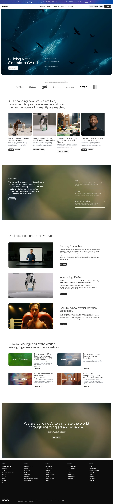

Runway 主题
Runway 的 Design.md 主题展示，围绕AI、媒体内容、暗色界面、SaaS 产品组织页面。
AI video generation. Cinematic dark UI, media-rich layout.
AI媒体内容暗色界面SaaS 产品开发工具浅色界面B2B 产品效率工具专业工具

来源
- 来源
- getdesign.md
- 镜像
- github:VoltAgent/awesome-design-md
- 网站
- https://runwayml.com/
- 详情
- https://getdesign.md/runwayml/design-md
色板
#1a1a1a: #1a1a1a#000000: #000000#030303: #030303#ffffff: #ffffff#404040: #404040#676f7b: #676f7b#727a85: #727a85#6b7280: #6b7280#939393: #939393#999999: #999999#e7eaf0: #e7eaf0#c9ccd1: #c9ccd1
字体
display: abcNormalbody: abcNormalmono: ui-monospacehints: abcNormal,ui-monospace,Inter
圆角
control: 0pxcard: 8pxpreview: 16pxpill: 9999pxsource: design-md
间距
xxs: 4pxxs: 8pxsm: 12pxmd: 16pxlg: 24pxxl: 32pxxxl: 48pxsection: 64pxsection-lg: 96pxsource: design-md
使用建议
建议
- 建议：Reserve {colors.primary} for primary actions and the footer; use {button-primary} for every primary CTA without varying corner radius or fill。
- 建议：Stack uppercase {typography.eyebrow} over {typography.display} for every major section opener — it is the system's signature lockup。
- 建议：Use {colors.hairline} infill — never a coloured border — when one item in a comparison must read as featured。
- 建议：Set body copy in {colors.graphite} against {colors.canvas} for paragraphs, and reserve {colors.ink} for headings and emphasis only。
- 建议：Treat photography as content: full-bleed, cinematic, aligned to the page edge in heroes; {rounded.lg} only when the photo is contained inside a section。
避免
- 避免：introduce accent colours (blue, green, red) into marketing surfaces — Runwai's voice is monochrome plus photography。
- 避免：apply drop shadows or glows to cards. Depth is photographic and tonal, not material。
- 避免：badge the featured pricing tier with a coloured ribbon or border — the surface step is the badge。
- 避免：break headings into bold + light contrast; every heading is regular weight ({400}) with tight tracking。
- 避免：centre body paragraphs longer than one sentence — the system uses left-aligned reading bands almost exclusively。
查看 DESIGN.md